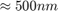

Computations
The tool consists of four major computational part. Two functions, TrackBead and TrackPipette, and two classes, BFPClass and vidWrap. While these functions and classes are connected to the GUI, they can be invoked also externally. The cornerstone is BFPClass which controls two whole process (according to passed-in instructions), invokes the tracking functions and maintains the returned data. vidWrap is a small class, which, to the biggest part, serves as a wrapper providing common interface for Matlab natively supported video formats and TIFF video format (supported through LibTIFF library). The code is generally commented in detail.
Contents
vidWrap class
Major features of the class will be discussed in more detail. The class is a child class of Matlab handle class. The class instance contains following varibles:
- vidObj: is an object of the VideoReader class or Tiff class. Is is called to subcontract class actions regarding video access.
- istiff: a bool indicating video's format (Tiff or not)
- videopath: full path to the video file
- video information: several fields containing video properties (Width, Height, Duration, Frames, Framerate, Name, Format)
- CurrentFrame: currently accessed frame of the video
- contrast information: fields containing information about various contrast measures for each frame, average intensity (GrayLvl), standard deviation of intensity (Contrast)---often referred to as SD2, running variance of SD2 (LocContrast)---often referred to as rSD2.
- rollVarWidth: width (in frames) of the rectangular moving window used to calculate rSD2 contrast metric
All the variables are public.
Constructor takes full path of a video file as an input, and populates most of the fields. It automatically determines if the file is Tiff or not. For the Tiff files, framerate is set to 1. The class contains following methods:
- [frame]=readFrame(index): reads next frame of the video, if optional (interger) input index, the index of requested frame, is provided, the frame of that particular index is returned.
- [db]=getFramerate(): (only for TIFF format) starts a temporary figure to prompt user for framerate of the open TIFF video. User can input either duration of the video in seconds, or directly framerate in frames per second. Returns handle to the dialog box.
- [match]=matchVideos(vidWrap): compares current vidWrap object with vidWrap object passed as the argument. The method is a quick superficial comparison, it compares format, width, height and number of frames. If those match, objects are consedered as matching. This method is used when a session is imported and user has to link appropriate video manually. Seturns structure of matches for individual categories.
- [contrast,meanGray]=getContrast(ffrm, lfrm; type, rVarWW): returns array of contrast metric during the interval [ffrm:lfrm], of type type (1==*SD2* or 2==*rSD2*). If contrast has not yet been calculated, it calculates all the three contrast metrics mentioned earlier (SD2, rSD2, meanGray); rSD2 is calculated with the sliding window width given by the parameter rVarWW (interger). Note that type and rVarWW are optinal parameters, passed as a pair (e.g.: 'rVarWW',10). The default type is SD2, the default rVarWW is object variable rollVarWidth.
- [contrastfrm]=getContrastByFrame(frm,type): returns value of contrast metric of type type for the requested frame index frm.
TrackBead method
The method subcontracts Matlab Image Processing Toolbox function imfindcircles to track a bead. imfindcircles uses Hough circular transform, documentation is available in Matlab help. The final bead selection is based on the imfindcircles detection strength (metric---Hough accummulator array value) corrected by magnitude of displacement as compared to the previous frame (for displacements above 5 pixels in one frame step, the metric is gradually reduced)._TrackBead_ method takes many optional inputs and parameters.
Inputs:
- vidObj : object of vidWrap class wrapping the video file
- contrast: contrast of the bead, either 'dark' or 'bright' (string)
- inicoor : initial coordinate, [x,y] of the bead
- range : the frame range to search for the bead;a pair of intergers; '-1' means track accross the whole passed video; this is optional input, which defaults to '-1'
parameters may be the following (passed as name,value pair):
- radius : range of radii of the bead; pair of intergers [r(1),r(2)], r(1)>r(2), r(1)>0
- buffer : number of frames of failed detection before aborting; interger
- sensitivity : 1-sensitivity=threshold for scores of Hough accumulator array to be considered a circle centre, the higher the sensitivity, the weaked circles are detected; value in interval [0,1]
- edge : edge threshold of the method, lower threshold considers more pixels to be edge pixels eligible to vote for centre; value in interval [0,1]
- side : half-side of a box shaped area around the last valid centre detection to search for the bead in the following frame; integer
- robustness : bead metric threshold, before corrective measures are taken; optimally in the range [0,2]
- imagequality: image contrast (SD2) relative threshold, before corrective measures are taken; value in the range [0,1]
- review : number of frames averaged to get info about metric and contrast; interger
- retries : max number of retries for one frame (w/ relaxed conditions); interger
- retry : the flag stating that the call on this function is a retry from another TrackBead instance; boolean
- waitbar : handle to figure of tracking progress bar started externally, if any; figure handle
Outputs:
- centres : centres of the detected beads, one centre per frame
- radii : radius of detected bead for each frame of tracking
- metrics : detection metric for each frame
- badFrames : frames, where detection failed, as a boolean
TrackPipette method
The method uses normxcorr2 normlized 2D cross correlation Matlab function to calculate correlation between provided pipette tip pattern and sub-areas in the video frame. Area of maximal correlation is fitted by elliptical paraboloid to obtain the result with sub-pixel precition. The exact coordinate of the pattern is returned as a coordinate of anchor point, predefined within the pattern. If the correlation coefficient drop below a (user)-specified threshold, the method can call corrective measures, like routine search in the whole field, or trying to restrict/enlarge the pattern to obtain better results. This corrections do not always improve detection performance and are computationally demanding.
Inputs:
- vidObj : object of vidWrap class wrapping the video file
- pipette : pattern of the pippete tip to be tracked (2D matrix, image)
- inicoor : initial coordinate to start the tracking; this is optional input, which defaults to search in the whole initial frame
- range : the range of frames to analyse in a video; a pair of intergers; '-1' means track accross the whole passed video; this is optional input, which defaults to '-1'
parameters may be following:
- review : number of frames used for robustness analysis (retrospective mean of correlation coefficients)
- robustness : threshold for poor correlation warnings and invocation of corrective measures, larger value means stricted conditions and more corrective calls; a value in range [0,1]
- quality : threshold for poor contrast warnings, which can sometimes lead to initiation of corrective measures; a value in range [0,1]
- wideField : switch for unrestricted search in the whole field (full frame); boolean
- buffer : number of failed consecutive frame searches before aborting; interger
- waitbar : handle to figure of tracking progress bar started externally, if any; figure handle
Outputs:
- position : array of positions of pipette anchor point for each frame
- scores : array of cross-correlation coefficient value for each frame
- badFrames : list of frames where detection failed
BFPClass
A control class for all BFPTool computations. It is a child class of Matlab handle class. Alle the fields of the class are public. It has a default constructor, which takes no arguments. Otherwise, the constructor takes 3 arguments, in the following order:
- name: the ID name of the object; string
- vidObj: vidWrap class object, connecting the processed video file
- intervallist: list of intervals to track; this structure contains not only delimiting frame indices, but also pipette patterns, initical coordinates, zero-load refrence distance frames etc. It provides the object with all the information it needs to track the bead and the pipette accross the video.
The class then provides several methods, which allow the object to import other parameters (defining geometry of the probe and settings and thresholds for the tracking methods). The methods will be discussed separately. To give a quick non-technical summary, the class allows tracking, calculation of RBC stiffness and force, has a plotting module (which generates most of the GUI graphs), generates tracking fidelity reports, generates output movies with detection marks overlay and has an import function, when older session of GUI is pulled.
Variables:
computational
- name: name of the experiment = name of the video file
- vidObj: vidWrap class video object handle
- beadPositions: array of positions of the bead centre for all proecessed frames
- pipPositions: array positions of the pipette tip anchors for all processed frames
- force: array of magnitude of force exerted through the BFP
- tracked: sets to true when tracking is successfully finished in the given interval
- trackedFrames: number of frames processed by the tracking method as of now
- minFrame: minimal index of a tracked frame of the video
- maxFrame: maximal index of a tracked frame of the video
- toBeTracked: number of all frames to be processed, based on imported intervallist
- intervallist: as mentioned above, a copy of the list passed as the third argument. It is parsed during the object creation and information about tracking (like minFrame, maxFrame etc.) are extracted.
geometry
- Rg: radius of RBC
- Rc: radius of RBC-SB contact
- Rp: radius of the pipette---inner radius at the inner RBC appex
- P: pressure in the pipette---aspiration pressure
- P2M: scale of the video; pixels to microns (for our experiments generally 0.1024 um = 1 px)
- k: stiffness of the BFP
- Dk: stiffness error, typically
bead tracking (see TrackBead section for details)
- radius: range of radii to track for the bead
- buffer: maximal number of frames of failed detection in a row
- sensitivity: bead detection sensitivity
- edge: edge detection thresh
- metric: bead detection metric thresh
pipette tracking (see TrackPipette section for details)
- correlation: correlation coefficient threshold
- contrast: contrast threshold
- pipbuffer: maximal number of frames of failed matching in a row
Implicit uncertainties
- DP = 10; implicit error of pressure measurement, 10 Pa
- DR = 0.1; implicit error of radius measurement, 0.1 micron
- linearLimit = 0.5; limit on extension for good linear approximation is 